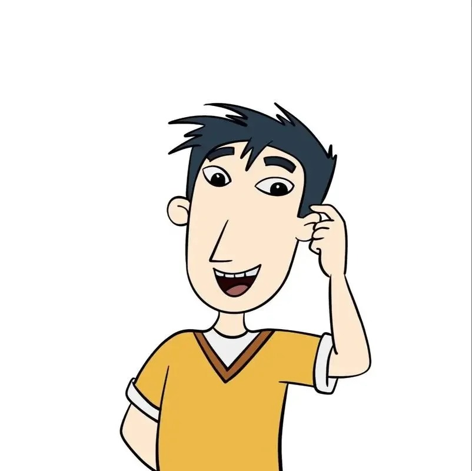
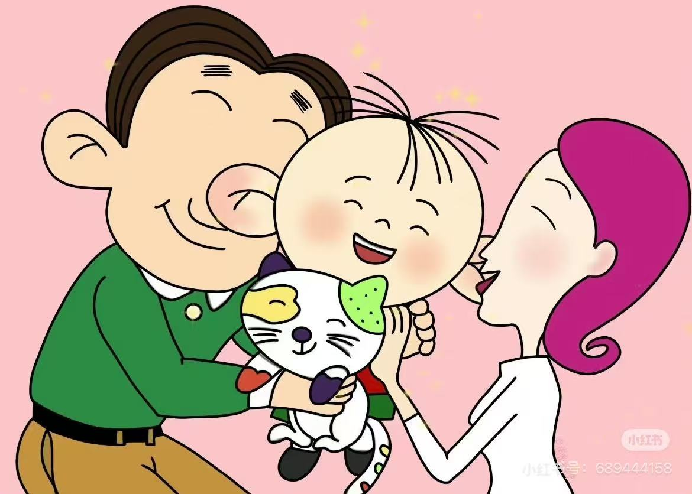
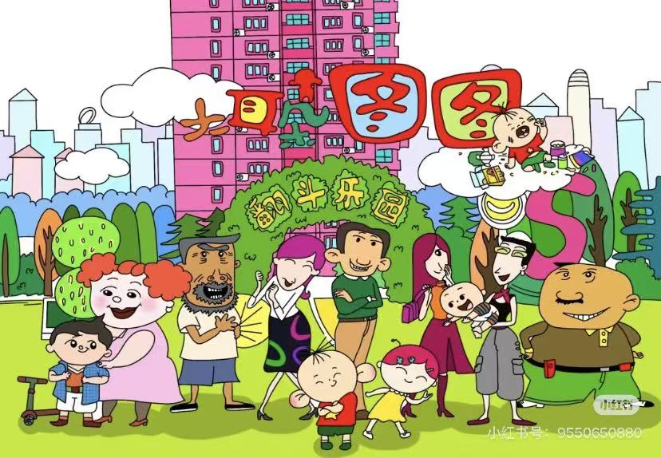
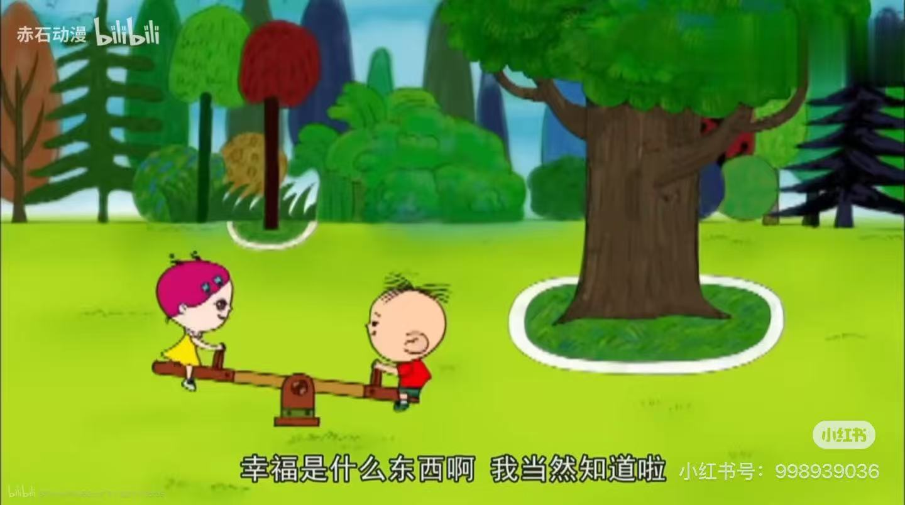

动画介绍
《大耳朵图图》是一部以中国现代城市家庭为背景的国产原创动画系列片，讲述了三岁小男孩胡图图的成长故事。
图图有着一对大大的耳朵，性格活泼可爱，好奇心强，经常会做出一些让人啼笑皆非的事情，通过他的视角展现了童年的纯真与快乐，同时也传递了家庭教育、亲子相处的温馨理念。
动画自播出以来，深受广大少年儿童及家长的喜爱，成为了许多人的童年经典回忆。
主要角色
胡图图
本片主角，三岁，喜欢吃巧克力饼干、冰淇淋，最大的特点是有一对大大的耳朵，擅长“动耳神功”。

健康哥哥
图图的老师，热心开朗，性格温柔，是图图心中的“小公主”，经常和图图一起玩耍。
胡英俊
图图的爸爸，性格有点迷糊，爱吹牛，但非常疼爱图图，经常和图图一起疯玩，是个“大孩子”式的父亲。
张小丽
图图的妈妈，热爱烹饪和购物，性格有点急躁，但对图图的爱无比深沉，是家庭里的“主心骨”。
经典场景

动耳神功展示

图图和家人吃晚餐

图图和小伙伴玩耍